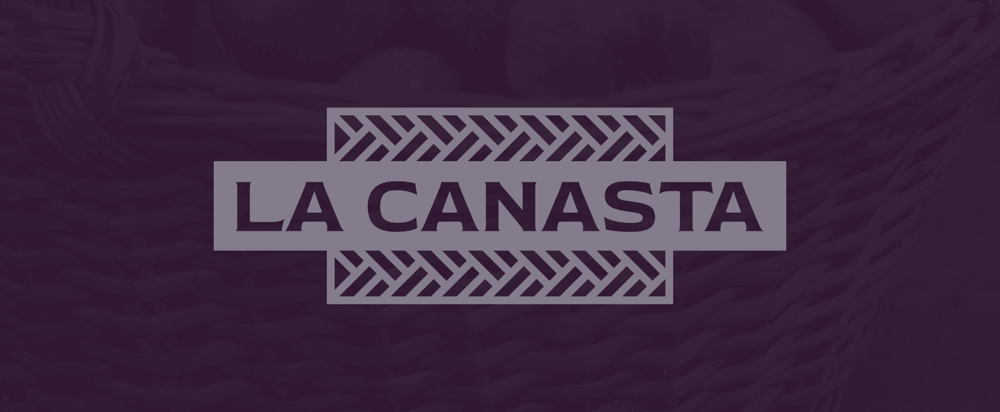
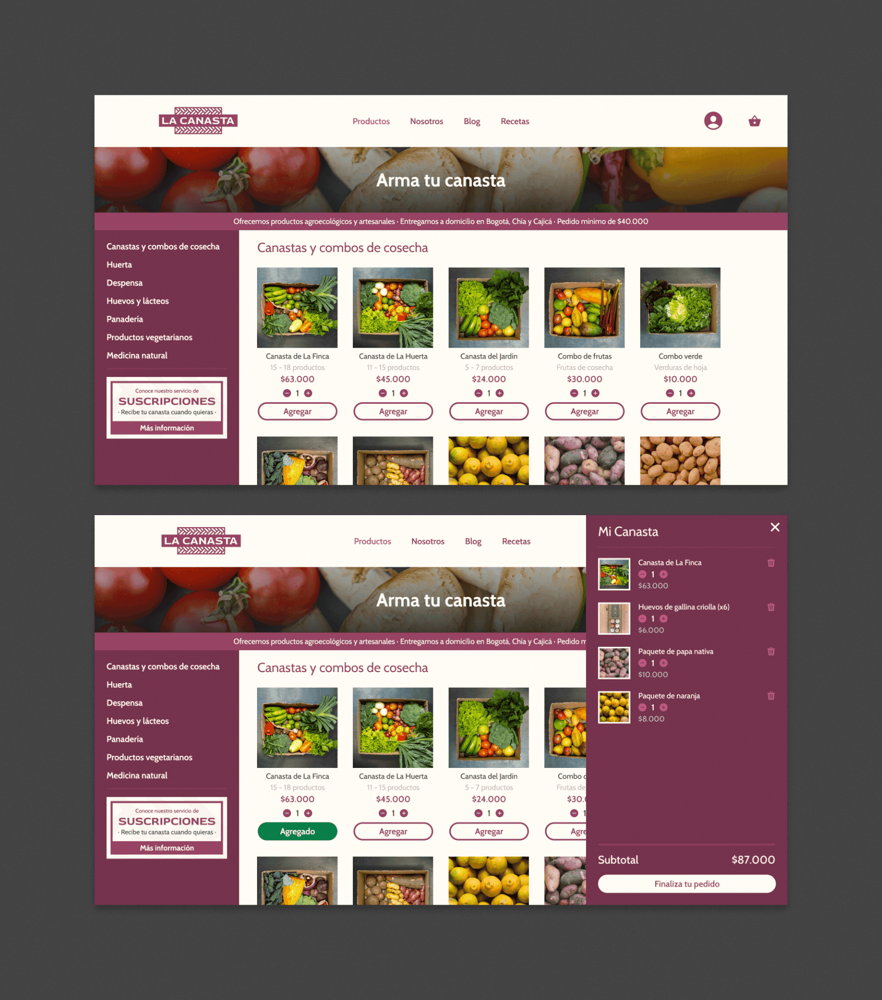
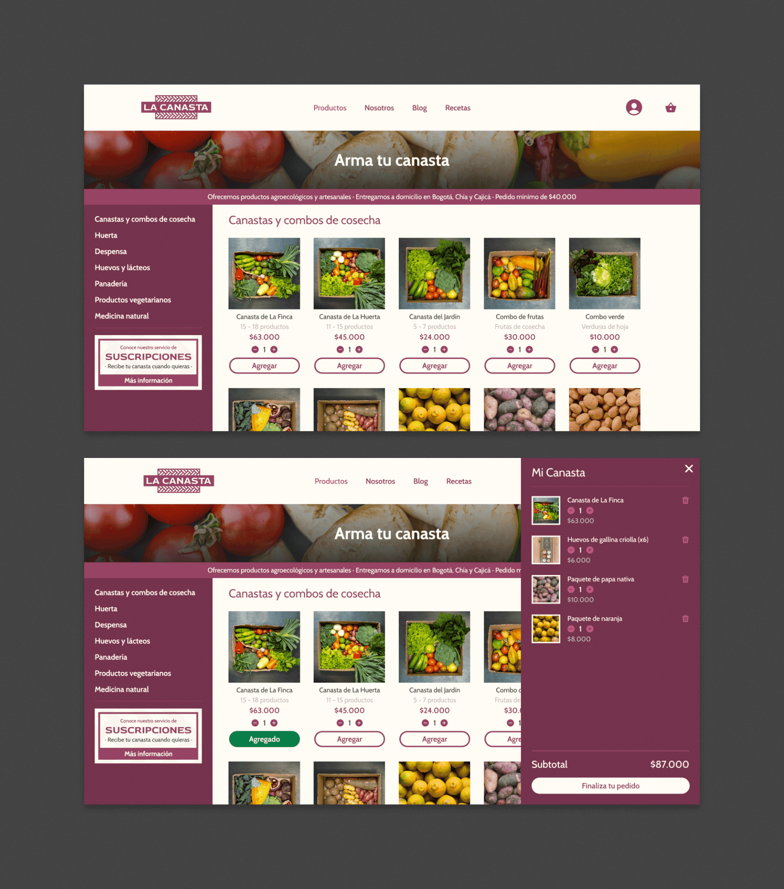
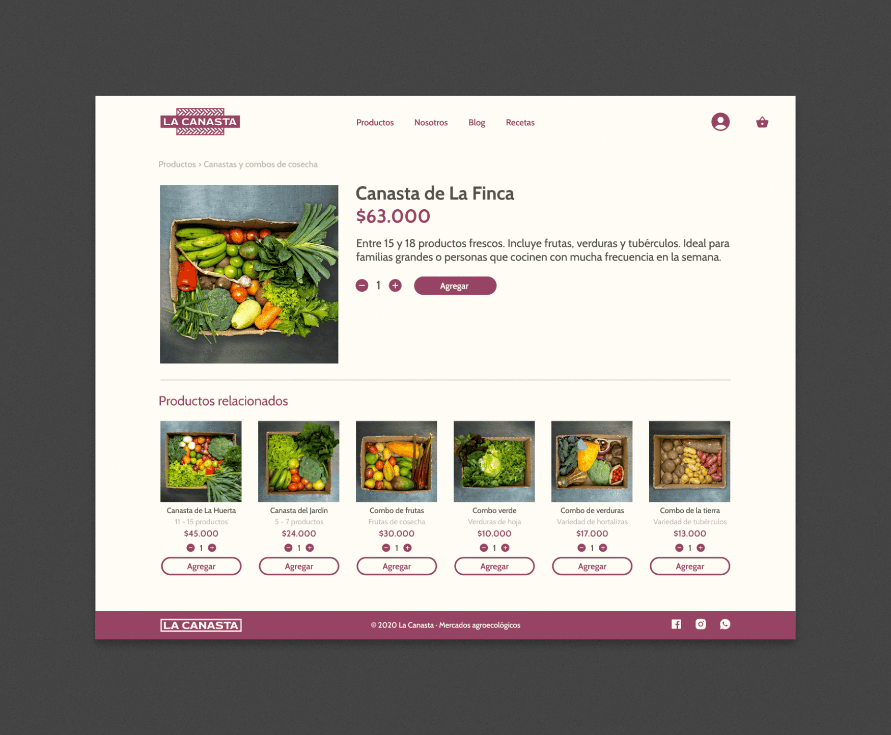

El objetivo principal del proyecto fue darle una mayor visibilidad a la información esencial de la iniciativa, así como a las características más importantes del sitio, presentándolas de forma clara dentro del flujo principal del mismo.
La Canasta
Sitio Web (Concepto) · Diseño UX/UI
Proyecto académico en Coderhouse√ü
2020
La Canasta es un mercado en línea especializado en alimentos orgánicos y agroecológicos, cultivados y producidos localmente en la sabana de Bogotá. Promueven una alimentación consciente y sostenible. Rediseñé su sitio web como proyecto final del curso de Diseño UX/UI Avanzado que tomé en Coderhouse.
La arquitectura y navegación fueron ajustadas, buscando simplificar la experiencia general del sitio. También fueron propuestos un estilo visual renovado y una nueva identidad de marca, dándole a la plataforma un aspecto más limpio y moderno.

 


Nuevo logotipo para La Canasta, aprovechando los patrones de las canastas como elemento visual, y haciendo uso de una tipografía más impactante, en comparación a la marca actual.
Nueva página de inicio para La Canasta. La información fue reorganizada y condensada para que fuera visible en su totalidad, sin necesidad de hacer scroll.
El catálogo de productos de La Canasta fue reestructurado, haciendo más sencilla la navegación y permitiendo a las personas usuarias explorar y seleccionar fácilmente los productos que quieran.
Se agregó un submenú lateral fijo a la sección de tienda, con todas las categorías de producto, que a su vez fueron condensadas y agrupadas en menos opciones, para hacer más eficiente la navegación. También se incluyó un banner para resaltar y promocionar el servicio de suscripciones que ofrece La Canasta.
Así se vería una página de producto, en caso de que las personas usuarias quieran conocer información más detallada sobre lo que van a comprar.
La Canasta permite a sus clientes agregar fondos a sus cuentas, como alternativa de pago. Sin embargo, la información sobre su saldo no está presente en ninguna parte del sitio (actualmente deben enviar un correo electrónico para conocerla). Para mejorar este punto de la experiencia, dicha información fue incluída durante el rediseño de las secciones de perfil y de pago.
Secciones rediseñadas de perfil y de pago. Las personas usuarias tienen la posibilidad de visualizar su saldo disponible (y agregar dinero a sus cuentas) en ambas instancias.